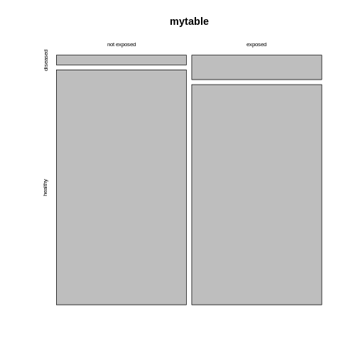
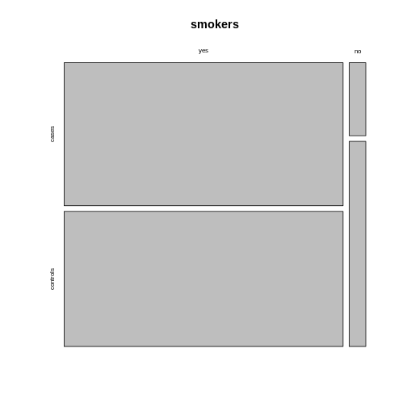

Content from Introduction to Categorical Data
Last updated on 2023-09-08 | Edit this page
Estimated time 10 minutes
Overview
Questions
- What is categorical data and how is it usually represented?
Objectives
- Introduce the contingency table.
- Learn to set up a contingency table in R.
Introduction
In biological experiments, we often compare what categories observations fall into. For example, we might look at cells in microscopy images and categorize them by the cell cycle, or by whether they carry a certain marker. We could categorize individuals (animals of humans) by whether they received a treatment in an experimental set-up, or by sex.
In this lesson, you’ll learn
- how to handle data sets containing categorical data in R,
- how to visualize categorical data,
- how to calculate effect sizes, and
- how to test for a difference in proportions.
Contingency tables
Let’s start by looking at how categorical data is usually presented
to us.
The most common format to communicate categorical data is by using a
contingency table. The following example describes an
experiment that aims at finding out whether exposure to a chemical in
question increases the risk of getting a certain disease. In the
experiment, 200 mice were either exposed to the chemical (N=100) or not
(N=100). After 4 weeks, the mice were tested for whether they had
developed the disease. In the non-exposed group, 4 mice had the disease,
and within the exposed group, 10 mice developed teh disease. This
information can be displayed as follows:
| diseased | healthy | |
|---|---|---|
| non-exposed | 4 | 96 |
| exposed | 10 | 90 |
Each mouse either was either exposed, or not. So
exposure is a categorical variable with two levels,
exposed and non_exposed. Similarly, we have a
variable which we might call outcome, with the categories
healthy and diseased.
The above contingency is a so-called 2x2 table, because it has two rows and two columns. There are also variables with more than two categories, which lead to larger tables.
In a contingency table, the rows and columns specify which categories
the two variables can take. The cells of the table represent the
possible combinations of the variable (for example healthy
and exposed is a possible combination), and the cell gives
the count how many times this combination was observed in the study or
experiment at hand.
Some terminology
If we have a 2x2 table, then there are four squares with numbers in
them, which we refer to as the cells of the
table.
Each cell contains a count, which we call \(n\), and we index it by the rows and
columns of that table. So the count in row 1 and column 2 will be called
\(n_{12}\).
Sometimes we also look at row totals or column totals, and in this
lesson we use a dot (\(\cdot\)) to
indicate when a row or column is summed over). The total counts in row
2, for example would be referred to as \(n_{2\cdot}\).

Contingency tables in R
Let’s suppose you have some observations, and you want to code them up in a contingency table in R. For most of the analysis that we’ll see in this lesson, it’s most useful to store the data in a matrix.
One way of constructing a matrix is by using the function
rbind, which “binds rows”: It takes vectors as arguments,
and stacks them as the rows of a matrix.
For the above table, the function call looks like this:
R
mytable <- rbind(
c(4,96),
c(10,90)
)
mytable
OUTPUT
[,1] [,2]
[1,] 4 96
[2,] 10 90Now, to remember which cell represents which observations, I find it useful to name the rows and columns:
R
rownames(mytable) <- c("non-exposed","exposed")
colnames(mytable) <- c("diseased", "healthy")
mytable
OUTPUT
diseased healthy
non-exposed 4 96
exposed 10 90Later in this lesson, we’ll also see how to tabulate observations from data frames, and how to turn contingency tables into a tidy format for modeling. But first, let’s get started with analyzing the table.
Content from Quantifying association
Last updated on 2023-09-08 | Edit this page
Estimated time 20 minutes
Overview
Questions
Objectives
Here’s the table again:
| diseased | healthy | |
|---|---|---|
| not exposed | 4 | 96 |
| exposed | 10 | 90 |
What we probably want to find out in a study as described in the previous episode, is whether the
chemical has an effect on the risk for getting the disease. We could
also say, that we’d like to know whether the variables
outcome and exposure are associated.
Yet another way to express this question in quantitative terms is asking
whether the proportions of diseased mice are the same for exposed and
non-exposed mice.
So, it’s rather obvious that the proportions differ between the two test groups in this specific sample:
- \(4/100 = 4\%\) in the non-exposed group
- \(10/100 = 10\%\) in the exposed group.
But since sampling includes randomness, it could be that the difference is just by chance. Later in this lesson we’ll learn how to test whether the difference in proportions is significance, by asking how likely it is to see this difference just by chance, given the number of test mice at hand.
For now, we’ll start by quantifying the effect that we observe in this sample. There are different options to express the effect of the exposure from this sample. After all we’re summarizing 4 counts into one value, and there are more than one way of doing so.
Measures for association
Difference in proportions: The difference in proportions is the most intuitive way of summarizing the contingency table. We subtract the proportion of diseased mice in one group from the proportion in the other. In our example
\[ D = \hat{P}(\text{disease}|E) - \hat{P}(\text{disease} | N) = 0.06\] In the formula above, we subtract two conditional probabilities from each other. The notation \(P(\text{event} | \text{condition})\) describes the probability of an event, given a condition. I use \(N\) and \(E\) for describing the non-exposed and exposed group, respectively. So \(P(\text{disease}|N)\) is the probability of getting the disease, given that a mouse belongs to the non-exposed group.
Callout
Why the hat? Well, we’d sure like to learn something about the true probabilities of getting the disease under some condition, but in fact we only have a sample of 200 mice, which means the proportions don’t correspond to the true probabilities, generalized over all mice in the world. The notation \(\hat{P}\) acknowledges the fact that the sample proportions are our current best estimate for the true probabilities.
Relative risk: You may have noticed a problem about the difference in proportion: It depends on how high the prevalence of the disease is in the first place. For a disease with a very low prevalence, we might see a difference between 8/1000 and 4/1000 test subjects of the exposed and non-exposed group, which is only \(0.4\%\). But in relative terms, the prevalence is twice as high in the exposed group compared to the non-exposed group.
We can account for that by reporting the ratio between the proportions in both groups:
\[RR = \frac{\hat{P}(\text{disease} | E)}{\hat{P}(\text{disease} | N)} = 2.5 \]
The result \(RR=2.5\) tells you that the proportion of mice who developed the disease was \(2.5\) times higher in the exposed group than in the non-exposed group.
Callout
The relative risk has its origin in epidemiology, which means that the name is meaningful in many clinical settings, but not necessarily in with regard to every wet lab experiment. The important part here is to first phrase the research question carefully, and then think about which measure can be helpful in answering it. If the \(RR\) is useful in your case, but the name doesn’t make sense regarding your data, you can still use the measure and think about a more useful terminology.
Odds ratio: Often, the association between two variables (in this case: disease and exposure) is also expressed in terms of odds ratios. If a disease has the probability of \(p=0.1\) of occurring in a mouse within a given time, then the odds of getting the disease is \(\frac{p}{1-p}=\frac{0.1}{0.9}=0.11\). The odds ratio compares the odds of getting the disease between two conditions. In our example the odds ratio is
\[OR = \frac{\hat{P}(\text{disease}|E) / (1 - \hat{P}(\text{disease}|E)) }{\hat{P}(\text{disease}|N) / (1 - \hat{P}(\text{disease}|N))} \approx 2.7\]
We say that the odds for getting the disease is 2.7 higher in the exposed group compare to the non-exposed group. For calculating the sample odds ratio, you can use the following simple formula:
\[ OR = \frac{n_{1,1} / n_{1,2}}{n_{2,1} / n_{2,2}}\]
Admittedly, the odds ratio is not a very intuitive measure for association, but it has some useful mathematical properties (which won’t concern us in this lesson). The odds ratio is
\[OR = \begin{cases} >1 & \quad \text{if there is a positive association}\\ \,1 & \quad \text{if there is no assocation}\\ <1 & \quad \text{if there is a negative association} \end{cases}\]
Note that the \(OR\) depends on how you order your table.
Log odds ratio: The log odds ratio is simply the logarithm of the odds ratio, \(\log(OR)\). One nice thing about this value is that it’s zero when there’s no association between the two variables.
\[\log OR = \begin{cases} >0 & \quad \text{if there is a positive association}\\ \,0 & \quad \text{there is no association}\\ <0 & \quad \text{there is a negative association} \end{cases}\]
This scale is useful for plotting data, because it’s good at resolving strong negative associations (for example, if a treatment decreases the risk for disease), which would be very small numbers when expressed as relative risk, or odds ratios.
Knowing about log odds and log odds ratios is also useful for interpreting some statistical models (for example Poisson GLM, or logistic models) where the model parameters are expressed in terms of log odds.
Challenge
Consider the following data: 
The above table comes from one of the first studies of the link between lung cancer and smoking, by Richard Doll and A. Bradford Hill. In 20 hospitals in London, UK, patients admitted with lung cancer in the previous year were queried about their smoking behavior. For each patient admitted, researchers studied the smoking behavior of a non-cancer control patient at the same hospital of the same sex and within the same 5-year grouping on age. A smoker was defined as a person who had smoked at least one cigarette a day for at least a year.
- Construct a table that represents this study in R.
- Calculate a measure for association that you find useful in this scenario.
- Construct a contingency table:
R
mytable <- rbind(
c(688, 650),
c(21, 59)
)
rownames(mytable) <- c("yes", "no")
colnames(mytable) <- c("cases", "controls")
- Since this is a case control study, comparing the proportions of cancer patients between smokers and non-smokers makes no sense. They don’t reflect the true probabilities of getting cancer, because by design the same number of cancer and no cancer subjects were included in the study. Instead, you can compare the proportions of smokers between the groups:
R
# 1. difference in proportions of smokers between cases and controls
688/(21+688) - 650/(59+650)
OUTPUT
[1] 0.05359661R
# ratio in proportions of smokers between cases and controls
(688 / (21+688)) / (650 / (59+650))
OUTPUT
[1] 1.058462R
# --> The proportion of smokers was 1.05 times higher for the cases
# odds ratio
(688 / 21) / (650/59)
OUTPUT
[1] 2.973773R
# --> The odds for having smoked was 3 times higher in the cases group
# log odds ratio
log((688 / 21) / (650/59))
OUTPUT
[1] 1.089831Content from Visualizing categorical data
Last updated on 2023-09-08 | Edit this page
Estimated time 10 minutes
Overview
Questions
- How can I visualize categorical data in R?
Objectives
- Learn to make a mosaic plot in base R and using
ggplot2.
R
mytable <- rbind(c(4,96), c(10,90))
rownames(mytable) <- c("not exposed","exposed")
colnames(mytable) <- c("diseased", "healthy")
You now know how to calculate a measure for association from your table - great! But so far, we’ve only looked at numbers, and you’ve also learned that you should also visualize your data. Yes, even if it’s only 4 data points!
Using base R
There is a very simple way to do this using base R:
R
mosaicplot(mytable)
 The mosaic plot consists of rectangles representing the contingency table’s cells. The areas of the rectangles are proportional to the respective cells’ count, making it easier for the human eye to compare the proportions.
Note that the above mosaicplot is arranged such that the rectangles of one column are neatly stacked on top of each other. At the same time, it has flipped the table such that the rows of our matrix have become the columns and vice versa.
This might not always be how you want your plot to look. For example, consider the smokers example from the previous episode:
R
smokers <- rbind(
c(688, 650),
c(21, 59)
)
rownames(smokers) <- c("yes", "no")
colnames(smokers) <- c("cases", "controls")
If we apply the mosaicplot here, it’ll look like
this:
R
mosaicplot(smokers)

Using the argument sort, you can determine how the
rectangles are aligned. You can align them by rows as follows:
R
mosaicplot(smokers,
sort = c(2,1))
 Alternatively, you can run the plotting function on the
transposed contingency table:
Alternatively, you can run the plotting function on the
transposed contingency table:
R
mosaicplot(t(smokers))

Using the ggplot2
We recommend using the tidyverse for data analysis in
general, and in particular ggplot2 for plotting. The above
function is perfect for getting a quick overview on the data. For
creating high-quality, customized graphics, ggplot2 is
usually the better choice.
This gives us a great opportunity to talk about tidy data: In a tidy table
- each variable is a column and
- each observation is a row.
It would have three columns, according to the variables:
exposure (exposed or not), outcome (diseased
or healthy), and count.
Let’s code up the table in tidy format:
R
mice <- data.frame(
exposure = c("yes", "yes", "no", "no"),
outcome = c("diseased", "healthy", "diseased", "healthy"),
count = c(10, 90, 4, 96)
)
mice
OUTPUT
exposure outcome count
1 yes diseased 10
2 yes healthy 90
3 no diseased 4
4 no healthy 96This tidy table can be the input for the ggplot
function. There are multiple ways and possible designs for mosaic plots
using ggplot2. We’ll demonstrate one here:
R
library(tidyverse)
mice %>%
group_by(exposure) %>%
mutate(sumcount = sum(count)) %>%
ggplot(aes(x=exposure, y = count, fill=outcome, width=sumcount)) +
geom_bar(stat="identity", position = "fill") +
facet_grid(~exposure, scales = "free_x", space = "free_x")+
theme_void()
The above code is borrowed from this post.
Content from Sampling schemes and probabilities
Last updated on 2023-09-08 | Edit this page
Estimated time 10 minutes
Overview
Questions
- Question 1
Objectives
- Understand the how counts are generated.
Where do the counts in the contingency table come from? Answering this question is an important part of understanding how we expect them to behave in scenarios where two variables are independent or associated.
Let’s switch to a different toy example: We have a contingency table with frogs, which can either be male or female, and they can be either light or dark green.

To fill this table with counts, we can imagine different study designs that correspond to different sampling schemes.
Sampling schemes
1. Poisson sampling: Frogs of both sexes and colors could be collected for a fixed period of time, let’s say 10 minutes. They are then sorted into the four categories (male-light, male-dark, female-light, and female-dark).

We could describe this process as Poisson sampling, where each category has its own Poisson rate \(\lambda_{r,c}\). We also know that the Poisson distribution is an approximation of binomial distribution, with a rate of
\[\lambda_{r,c} = n * p_{r,c},\]
where in this example, \(n\) is the number of frogs we usually see during the 10 min, and \(p_{r,c}\) is the success probability of a frog belonging to the respective category. The rate \(\lambda_{rc}\) is the expected count for the cell in row \(r\) and column \(c\).
2. Binomial sampling: Maybe there are many more female than male frogs in the lake, and therefore the researchers decided to balance the study by catching 50 male and 50 female frogs, and comparing the proportions or light and dark between those.

In this case, we could describe the scenario as two binomial sampling processes. In one of them, we have
- a fixed number of \(n_{1\cdot}\) female frogs, and a probability of \(p_{xx}\) for each of them of being light.
- a fixed number of \(n_{2\cdot}\) male frogs, and a probability of \(p_{x}\) for each of them of being light.
The expected count for each cell is \(p_{xx}n_{1\cdot}\).
Multinomial sampling: One could also set up a study in which the total number of frogs is fixed from the beginning, for example the researchers could fill a net with 100 frogs and then sort them into the four categories.
This would be described as a multinomial sampling. There is a fixed number of \(n_{\cdot,\cdot}\) frogs (=events), and there are four different outcomes for each event, each with its own probability \(p_{r,c}\). The expected count in each cell is thus \(n_{\cdot\cdot}p_{rc}\).
Callout
If the terms I’m using above sound unfamiliar to you, please revisit the lesson on statistical distributions.
Expected counts
You probably noticed that, irrespective of the sampling scheme, i.e. the data generating process, the expected count for each cell is some multiplication of a probability \(p\) and a number of observations \(n\). If we collect data, we can control the sampling scheme, but, of course, we don’t know the true \(p\)s. If we knew them, we could answer right away whether the proportions of dark frogs are different among female and male frogs.
However, we can make a prediction about how we expect the probabilities – and thus counts – to behave in case the proportions of dark frogs are the same for both sexes. For this, we need an excursion to probability theory.
Probability rule for independence
When we are asking whether the proportions of dark frogs are the same for both sexes, we can rephrase this question and ask: Are the sex and the color independent of each other.
Let’s look at two examples, one for independent and one for dependent probabilities.
As an example for independent events, consider two coins that are being flipped. If no black magic is at work, then the outcome of the first coin flip shouldn’t influence the outcome of the second. The probability of seeing two times head up is therefore
\[P(\text{head},\text{head}) = \overbrace{P(\text{head})}^{\text{first coin}} \cdot \overbrace{ P(\text{head})}^{\text{second coin}} = \frac{1}{2} \cdot \frac{1}{2} = \frac{1}{4} \]
More generally, we can say that if two events \(A\) and \(B\) are independent, then the probability of them occuring together is
\[P(A,B) = P(A) \cdot P(B)\]
This probability rule doesn’t hold when two outcomes are associated with each other. For example, we know that hair and eye color are associated. The probability of having blond hair and blue eyes can not be calculated by multiplying the individual probabilities. Why? Because once we know that someone has blond hair, the probability of also observing blue eyes is much higher than the marginal probability of having blue eyes. The marginal probability is the probability of having blue eyes, averaged over all people of all hair colors. We’d have to calculate
\[P(\text{blond},\text{blue}) = P(\text{blond}) \cdot \overbrace{P(\text{blue|blond})}^{\text{conditional probability}},\] where \(P(\text{blond})\) is the overall (marginal) probability of having blond hair, and \(P(\text{blue|blond})\) is the conditional probability of having blue eyes, for those that have blond hair.
The important part for us to move on with the contingency table analysis is that, when two events or variables \(A\) and \(B\) are associated, then
\[P(A,B) \neq P(A) \cdot P(B).\]
Content from The Chi-Square test
Last updated on 2023-09-08 | Edit this page
Estimated time 10 minutes
Overview
Questions
- What are the null and alternative hypothesis of the chi-square test?
- What are the expected counts under the null hypothesis?
- What is the test statistic for the chi-square test?
- How can I run the chi-square test in R?
Objectives
- Understand the principle behind the chisquare test.
- Be able to apply the chisquare test in R.
A hypothesis test for independence
So far, we have learned that
- in a \(2\times 2\) contingency table, we tabulate the counts according to two variables.
- We are usually interested in whether the two variables are associated.
- If the variables are associated, they should not follow the probability rules for independence.
If we’d like to set up a hypothesis test for whether the two varilables are associated, then we have to formulate a null hypothesis, and then calculate the probability of the observed counts under this hypothesis.
Let’s start with the null and alternative hypothesis. The
null hypothesis is that the two variables are
independent.
If we can reject the null hypothesis, we will take on the
alternative hypothesis is that the two variables are
associated.
Expected counts under then null hypothesis
In the chi-square test, which tests the above hypothesis, we start by calculating the expected counts under the null hypothesis, and then check how far the actual data are away from the expectation.
For this, we need to calculate the marginal frequencies of the outcomes of each variable. Remember, the marginal frequencies could also be translated as the overall frequency of this outcome.
The marginal frequencies are our estimate for the true marginal probabilities, which is why they are noted as \(\hat{P}\) (p hat). Remember that the hat indicates that the quantity below the hat is an estimate.
In the exposure/disease example, we can calculate the estimate for the marginal disease probability as
\[\hat{P}(\text{disease}) = \frac{n_{11}+n_{21}}{n_{\cdot\cdot}}.\]
This means we take the total number of diseased mice in the experiment (those that have been exposed, and those that haven’t been) and divide it by the total number of mice in the experiment. In other words, we calculate the proportion of mice with disease, ignoring that some of them have been exposed to the chemical and others haven’t.
Likewise we can calculate the marginal proportion of exposed mice as
\[\hat{P}(\text{exposed}) = \frac{n_{11} + n_{12}}{n_{\cdot\cdot}},\] meaning we divide the number of all exposed mice (ignoring whether they contracted the disease) by the total number of mice in the experiment.
Let’s add some numbers to this:

In the above table, I’ve added the marginal totals on the sides (I think that’s where the term “marginal” comes from). We see that, in total, 100 out of the 200 mice were exposed to the chemical (by design of the experiment), which gives a marginal proportion of \[\hat{P}(\text{exposure})=\frac{100}{200}=0.5\] of exposed mice. On the other hand, ignoring exposure, 14 out the 200 mice caught the disease during the experiment, giving an estimated marginal probability of
\[\hat{P}(\text{disease})=\frac{14}{200}=0.07.\]
Now, the key point is that we estimated the probabilities of exposure and disease, while ignoring the respective other variable – which is exactly what’s valid to do when the two variables are not associated. So, assuming the null hypothesis is true and the variables are in fact nor associated, we can use these estimated probabilities and apply the probability rule for independence to calculate the estimated counts under the null.
For example, the expected count for exposed, diseased mice is
\[E(n_{11}) = \hat{P}(\text{exposed}) \cdot \hat{P}(\text{disease}) \cdot n_{\cdot\cdot} = 0.5 \cdot 0.07 \cdot 200 = 7.\]
\[E_{22} = \hat{P}(\text{non-exposed}) \cdot \hat{P}(\text{healthy}) \cdot n_{\cdot\cdot} = 0.5 \cdot 0.93 \cdot 200 = 93\]
The Chi-square statistic
If we have expected counts under the assumption of independence, the natural thing to do is compare them with the actual counts. For a hypothesis test, we’d like to have the probability of the observed counts under the assumption of independence, which is one value, while we have four counts. Therefore, in the chi-square test, the discrepancy between observed and expected counts is summarized into one statistic called \(\chi^2\) (chi square):
\[\chi^2 = \sum_{ij}\frac{(O_{ij}-E_{ij})^2}{E_{ij}}\]
where
- \(i\) and \(j\) are the row and column indices,
- \(O\) is the observed count, and
- \(E\) is the expected count.
The value \(\chi^2\) is the sum of squares of the differences between observed and expected counts, normalized by the expected counts, and it quantifies the deviation from independence.
Now we need the probability of the \(\chi^2\) calculated from our data under the assumption of independence. To find a null distribution for \(\chi^2\), you could repeatedly simulate data from a model in which the two variables are independent, and then compare the observed value to the resulting distribution. Since in the previous lessons, we haven’t yet learned how to do this, we’ll stick with textbook knowledge for now:
The textbook tells us that the test statistic \(\chi^2\) follows a so-called \(\chi^2\) distribution (just like the t-statistic follows a t-distribution) with \((r-1)\cdot(r-2)\) degrees of freedom, where \(r\) and \(c\) are the numbers of rows and columns in the contingency table, respectively.
The Chi-square test in R
Let’s look at some results in practice. The test itself is really just one line of code.
R
chisq.test(mytable, correct=FALSE)
OUTPUT
Pearson's Chi-squared test
data: mytable
X-squared = 2.765, df = 1, p-value = 0.09635The output is also rather compact. We learn that R has calculated a
value for \(\chi^2=2.765\).df=1 tells us that it has compared this value to a \(\chi^2\)-distribution with one degree of
freedom. p-value = 0.09635 means that the probability of
observing a \(\chi^2\geq 2.765\) is
around 10%.
We could also perform this calculation ourselves:
R
pchisq(2.765,df=1, lower.tail=FALSE)
OUTPUT
[1] 0.09634669Conclusion: The difference in proportions of diseased mice are not significantly different in the exposure and no-exposure groups.
As a reminder: This doesn’t mean that exposure and disease are not associated, but that the data doesn’t hold enough evidence for a potential association, at a significance level of \(\alpha=0.05\).
Note
In the function call to chisq.test, we used the argument
correct=FALSE. This argument determines whether or not
Yates continuity correction is used. If you want to learn more
about it, have a look here.
My suggested default is to not use it.
R
mytest <- chisq.test(mytable, correct =FALSE)
names(mytest)
OUTPUT
[1] "statistic" "parameter" "p.value" "method" "data.name" "observed"
[7] "expected" "residuals" "stdres" R
mytest$expected
OUTPUT
diseased healthy
non-exposed 7 93
exposed 7 93When to apply
The \(\chi^2\) test is applicable to 2-dimensional contingency tables for testing the hypothesis of independence.
- It assumes that all observations are independent (one observation is an event that leads to the count in one cell being increased by 1).
- A rule of thumb is that the expected values of all cells in the contingency table should be >5 in at least 80% of the cells, and the expected cells should not be <1 in any of the cells. If this isn’t the case, an alternative is Fisher’s exact test (see next episode).
Content from Categorical data and statistical power
Last updated on 2023-09-08 | Edit this page
Estimated time 10 minutes
Overview
Questions
- What determines the power of a chi-square test?
- Why is it difficult to determine significance for discrete data?
- What is the Fisher test and when should I use it?
Objectives
- Introduce Fisher’s exact test.
- Explain difficulties with significance testing for discrete p-values.
Statistical power
Statistical power is the probability that an effect is detected as significant with a given method, provided that the effect really exists.
In the lesson on hypothesis testing, we learned that the power depends on
- the size of the effect,
- the significance level,
- the method we choose for testing, and
- the sample size.
In this lesson’s example, the estimated association is not quite small (\(6\%\) difference in proportions, or risk for disease more than twice as high for exposed mice), the significance level was the usual \(5\%\), and a sample size of 200 doesn’t seem small, either. Still, the effect is not significant. Does this mean that the Chi-square test is useless?
They key here is the low overall probability of mice contracting the disease. Even though there were 200 mice, only a total of 14 out of them actually contracted the disease. And it’s this low number of cases that limits the power of the study.
In fact, if there was a sample of 2000 mice, and only 14 of them caught the disease, then the p-value would hardly change:
R
chisq.test(rbind(
c(4,996),
c(10,990)),
correct=FALSE)
OUTPUT
Pearson's Chi-squared test
data: rbind(c(4, 996), c(10, 990))
X-squared = 2.5896, df = 1, p-value = 0.1076Intuitively, we still have 14 cases, and the question is how we’d expect them to distribute among the two groups (exposure and no exposure) by chance.
Thus, the power of the study is limited by the lowest counts in the table. We could also say that extreme frequencies (a low probability of one outcome always corresponds to a high probability of the other outcome) are unfavorable. To overcome the problem of a low number of cases, clinical studies are often conducted as case-control studies. In those, the same number of cases and controls are sampled by design. One can then compare the occurrence of certain risk factors (e.g. smoking, exposure, …) between the two groups.
The Fisher test
There is another test, called Fisher test, which is also used on contingency tables, and which tests exactly the same hypothesis as the chi-square test. It doesn’t sum up the differences between observed and expected counts, but instead calculates the probability of the observed data using a hypergeometric distribution. The hypergeometric distribution is similar to the multinomial distribution (except that it assumes draws without replacement) and gives exact probabilities for counts to fall into different categories (in this case the cells) under the assumption of independence.
If you do your research on which test to use (e.g. ask google), you’ll stumble upon statements like “the Fisher test is more conservative”, or “the \(\chi^2\)-test overestimates significance for small counts”. What does this mean?
Significance for discrete data
Let’s recap what it means to choose a significance level of \(\alpha=5\%\): It means we decide to reject the null hypothesis if the probability of seeing the observed data under the null is \(\leq5\%\).
For continuous probability distributions like the t-distribution used in the t-test, this means that the probability of getting a p-value \(<0.05\) is \(5\%\), the probability of getting a p-value \(<0.1\) is \(10\%\), and so on.
Unfortunately, for discrete data, this is not actually the case.
The following simulation is an attempt to demonstrate this. Suppose
we test the association between the preferred animal of a person (we
give the choice between cat and dog), and their handedness. And let’s
say that being left-handed gives absolutely no information on whether a
person likes cats more than dogs, i.e. the null hypothesis of
independence is true. Further, we assume that the probability of being
left-handed is \(P(L)=0.1\) and the
probability of preferring cats is \(P(C)=0.6\). The hypothetical experiment
will sample 50 left-handed and 50 right-handed persons, and ask them
about their preference for cats or dogs. With this information, we can
simulate such a study using rbinom for generating random
binomial numbers:
R
set.seed(30)
n <- 25
cats_l <- rbinom(n=1, size=n,prob = 0.6)
dogs_l <- n-cats_l
cats_r <- rbinom(n=1, size=n,prob = 0.6)
dogs_r <- n-cats_r
simtable <- rbind(c(cats_l, dogs_l),
c(cats_r, dogs_r))
We can also compute the p-value from this table:
R
chisq.test(simtable)
OUTPUT
Pearson's Chi-squared test with Yates' continuity correction
data: simtable
X-squared = 0.35651, df = 1, p-value = 0.5505To see how the p-values behave, let’s run 2000 such simulations and
report the p-value. For this, I use a for-loop around the above code. In
each iteration of the loop, a contingency table under always the same
assumptions is generated, and the p-value is stored in a variable calle
p_vals.
R
set.seed(20)
N=2000
p_vals <- rep(NA,2000)
for(i in seq_along(p_vals)){ # as many iterations as p_vals is long
cats_l <- rbinom(n=1, size=n,prob = 0.9)
dogs_l <- n-cats_l
cats_r <- rbinom(n=1, size=n,prob = 0.9)
dogs_r <- n-cats_r
p_vals[i] <- chisq.test(rbind(c(cats_l, dogs_l),
c(cats_r, dogs_r)))$p.value
}
As a result of the simulation, p_vals contains 2000
p-values under the assumption that the null hypothesis is true.
R
head(p_vals)
OUTPUT
[1] 1 1 1 1 1 1What percentage of the p-values is smaller than \(0.05\)?
R
mean(p_vals<0.05, na.rm=TRUE)
OUTPUT
[1] 0.004515805We can also make a histogram of all the p-values in the simulation:
R
data.frame(p_vals) %>%
ggplot(aes(x=p_vals))+
geom_histogram()
 In theory, the histogram should show a uniform distribution (the
probability of getting a p-value \(<0.05\) is \(5\%\), the probability of getting a p-value
\(<0.1\) is \(10\%\), and so on…). But here, instead, the
p-values are discrete: They can only take certain values,
because there’s only a limited number of options how 25 observations can
fall into two categories (dogs/cats).
In theory, the histogram should show a uniform distribution (the
probability of getting a p-value \(<0.05\) is \(5\%\), the probability of getting a p-value
\(<0.1\) is \(10\%\), and so on…). But here, instead, the
p-values are discrete: They can only take certain values,
because there’s only a limited number of options how 25 observations can
fall into two categories (dogs/cats).
Since for small counts, the chances to get a p-value \(p<0.05\) are actually below 5% – and this holds also for other values of \(p\) which are not exactly \(0.05\) – we say that the Fisher test is conservative. It means that interpreting the discrete hypergeometric probabilities as continuous p-values will lead us to overestimated p-values. This also holds true when the null hypothesis is actually false, so we’re reducing our chances to run a significant test, even if there’s something to detect.
For a more detailed explanation, see An introduction to Categorical Data Analysis by Alan Agresti.
Now what?
The Fisher test is conservative, especially for low counts. The \(\chi^2\)-test doesn’t have this problem, but at the same time should not be applied to tables with low counts, because it might produce false positives (see the rule of thumb). So what should we do? There is not one commonly accepted answer to this. Some suggestions are:
- Use Fisher’s exact test and accept that it can be conservative. In the end, low counts indicate a small amount of evidence anyways, and you might need to collect more data to detect or confirm an effect.
- In Agresti’s book, you’ll find mid p-values and similar methods that aim at correcting the p-value for its discreteness.
- You can use the \(\chi^2\)-test in conjunction with Yates continuity correction. It applies a correction on the \(\chi^2\) statistic for tables with low expected counts to avoid underestimating the p-value. This method is not perfect either, and can lead to over-correcting.
The important part is that you don’t choose the method based on the p-value it produces for your specific data set. The worst thing you can do is try 3 different methods, choose the one with the lowest p-value and report this one. This is a form of p-value hacking called method hacking and increases your chances to produce false positive results. If your test comes out significant in only one of the tests you tried, be honest and report all of them, or otherwise investigate further, for example by collecting more data.
Content from Complications with biological data
Last updated on 2023-09-08 | Edit this page
Estimated time 10 minutes
Overview
Questions
- When are Fisher- and Chisquare test not applicable for biological data?
- What are alternative methods?
Objectives
- Explain overdispersion and how it can lead to false positives.
- Explain random effects.
- Name some alternative methods.
Larger tables
Very often, biological data are more complex than can be captured by a \(2\times2\) table.
For example:
2x4 table
2x2x3 table
Fisher’s exact test and the \(\chi^2\) test can also be applied to 2D tables with more than two categories in each dimension.
Interpretation for 2x4 example.
3D tables
For higher-dimensional tables, it gets a bit more complicated, because it turns out there are several questions that you could ask, and several assumptions that can be made.
Two examples - test for independence across replicates: conditional independence –> cmh
The replicate might have an effect on the row and column sums. Have a look at the Simpson’s paradox.
Three-way interactions
Refer to Poisson models
Additional variance
When we’re using Fisher’s or \(\chi^2\) test, we model the data as having been obtained from a particular sampling scheme, like Poisson, binomial or multinomial sampling. These assume that there is an underlying rate, or probability, at which events occur, and which doesn’t vary. For example, we could say that patients show up at a hospital at an average rate of 16 patients per day (\(\lambda=16\)), and if we took 5 samples at 5 different days, we’d assume the same Poisson rate for each day. The counts would vary from day to day, but with a variance of \(var=\lambda\), which is the expected randomness for a Poisson counting process. See also the lesson on distributions.
The problem is, that in biology, we often have experiments where we deal with additional variance that can’t be explained by the normal variance that’s inherent to Poisson counting. For example, if we model read counts from RNA sequencing, it turns out that the (residual) variance is much higher than \(\lambda\), because the expression of a particular gene usually depends on more factors than just the experimentally controlled condition(s). It is also influenced by additional biological and possibly technical variance, such that the counts vary considerably between replicates.
So what?
What happens if we still analyze these data with methods that assume Poisson variance? This increases the risk for false positives. Intuitively speaking, the increased variance can produce high counts in one or more of the cells, leading to higher proportions than would be expected by change under the assumption of independence and Poisson sampling. So the Fisher test can mistake noise for a difference in proportions.
What to do?
First of all, think about the data that you’re looking at, and how they were produced. If you have several replicates, you have a chance to estimate the variance in your data. In a typical \(2\times2\) table, you just have one count per cell, and a different condition in each cell, so there is no chance to infer the variance from looking at the data. In this case you have to ask yourself, whether it’s likely that you’re overlooking additional variance, and be aware that the data might not perfectly match the assumptions of your test, so don’t over-interpret the p-value that you get – which is always a good advice.
If you do have several counts per condition, you can consider to model your data using a generalized linear model of the negative binomial family. This is outside the scope of this lesson.